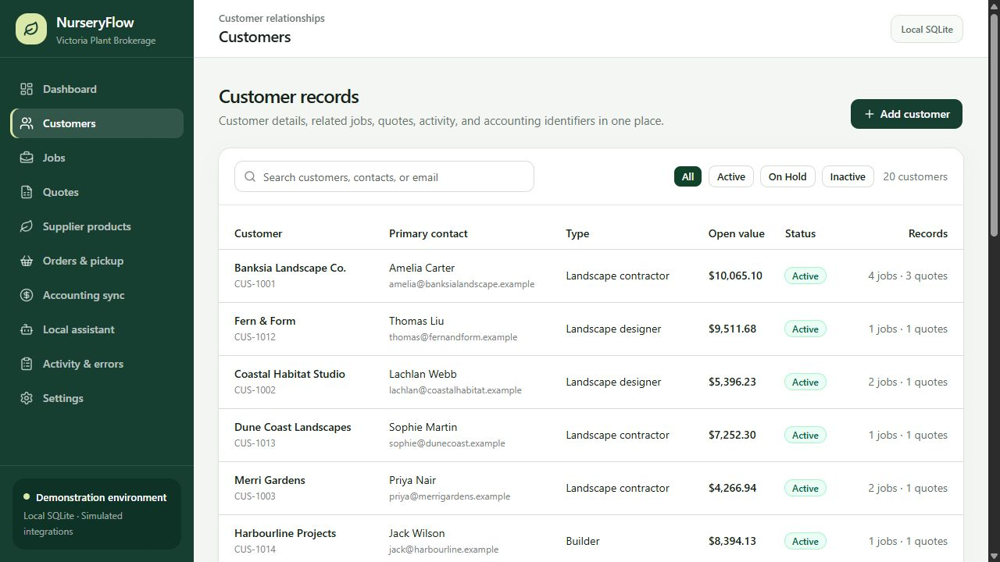
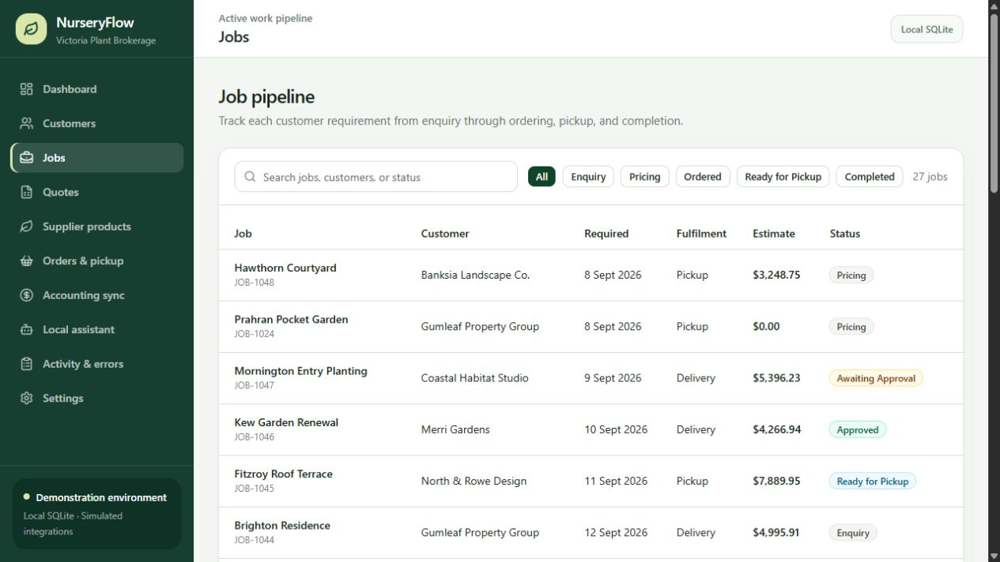
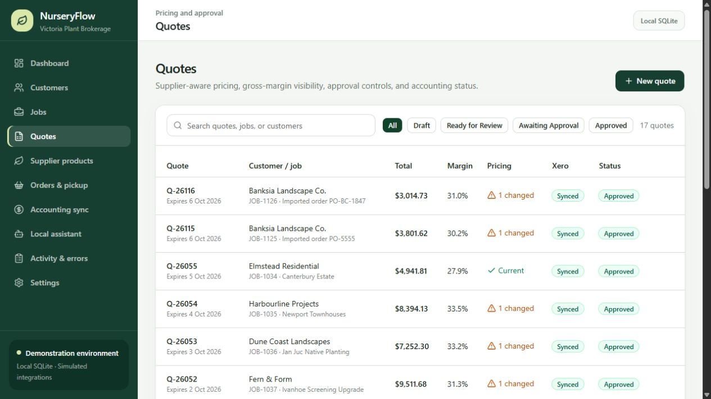
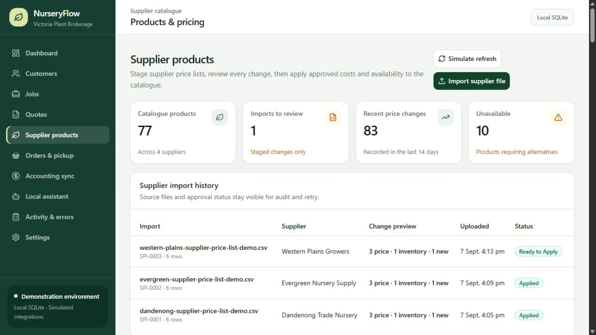
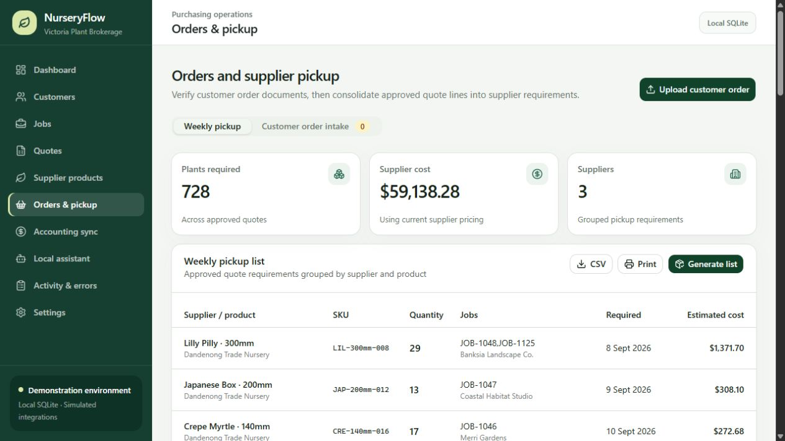
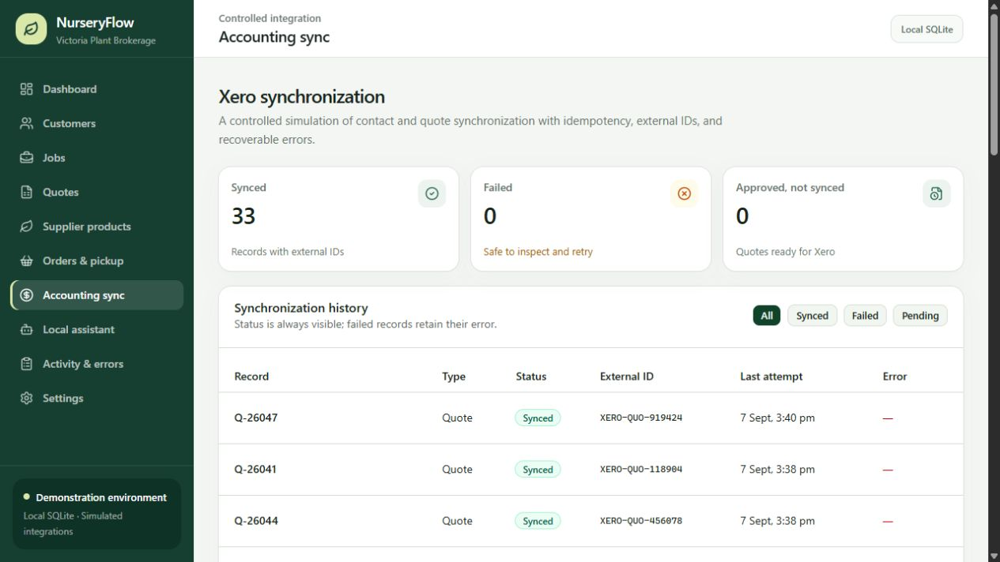
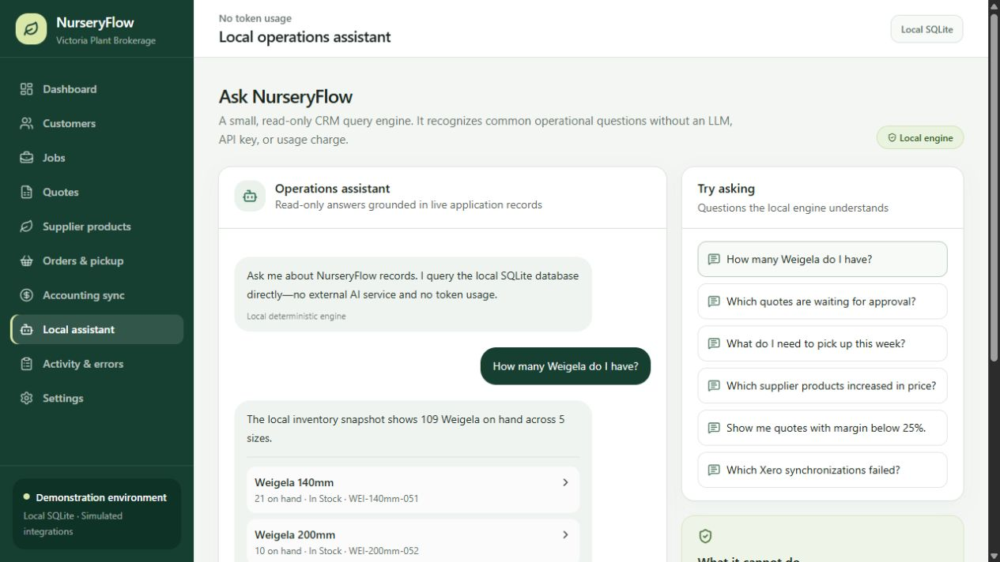
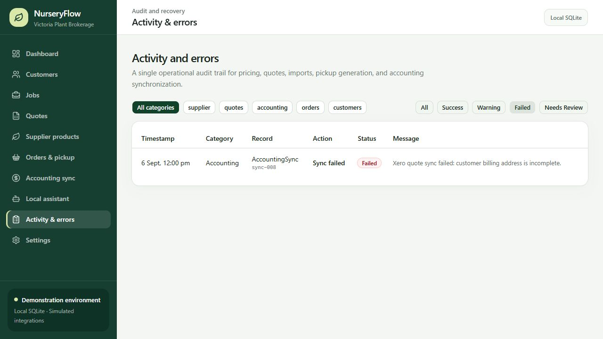
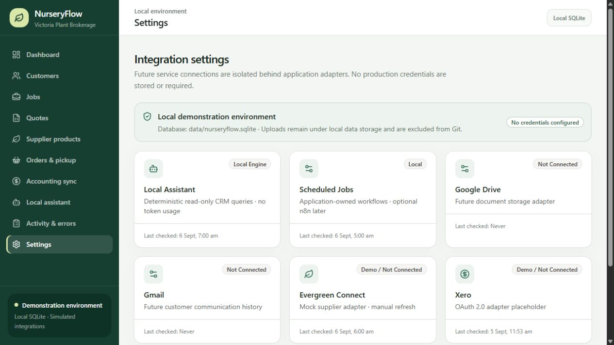

Nursery CRM & workflow automation
NurseryFlow
A local-first operations system connecting customers, jobs, quotes, supplier pricing, customer order intake, weekly pickup requirements, and controlled accounting synchronization.
- Role
- Product designer and full-stack developer
- Platform
- Next.js, TypeScript, SQLite, and a deterministic local query engine
- Portfolio data
- Synthetic CRM records with simulated Evergreen Connect and Xero adapters

The challenge
Replace fragmented nursery administration with one dependable workflow.
Nursery and plant brokerage work can span customer notes, job requirements, spreadsheet quotes, changing supplier price lists, emailed order documents, pickup coordination, and accounting records. When each step lives in a different tool, staff repeat data entry and pricing or quantity errors become difficult to trace.
The workflow also needs deliberate review points. Supplier updates and customer documents should be extracted and matched automatically, but a person must be able to compare the proposed changes with the source before they affect a quote, purchase requirement, or accounting record.
The solution
Automate the preparation, preserve the approval.
I designed NurseryFlow as a working local MVP with application-owned workflows and SQLite persistence. It demonstrates the complete operating model before production credentials, external APIs, or recurring usage costs are introduced.
- Customer, job, quote, follow-up, and operational status tracking in one CRM
- CSV and XLSX supplier price-list staging with matching, change previews, approval, and history
- PDF, CSV, and XLSX customer-order intake with customer and PO extraction plus line-by-line verification
- Supplier-aware quote pricing, gross-margin visibility, and stale-price warnings
- Weekly supplier pickup lists consolidated from approved quote requirements
- Controlled accounting synchronization with external IDs, duplicate prevention, retries, and error records
- Read-only operational questions answered locally without an LLM, API key, or token charge
My contribution
Product architecture, interface design, data modeling, and workflow safeguards.
I translated the business brief into a connected CRM and automation product, including its SQLite schema, operational dashboards, supplier-import controls, document-review workflow, pricing logic, pickup aggregation, local query engine, and accounting synchronization model.
The current portfolio build is intentionally local. Evergreen Connect and Xero are represented by controlled adapters rather than live credentials. In a production phase, those boundaries can be replaced with supported authenticated connections while the workflow and review controls remain intact.
Product walkthrough
A connected view of the nursery operation
These screens use synthetic business records in a local demonstration environment. They show the operating workflow and control points without exposing customer credentials or representing demo integrations as live.









Portfolio note